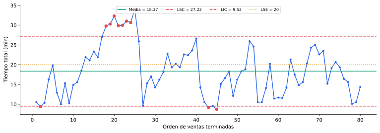
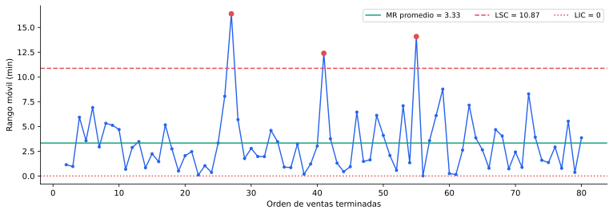
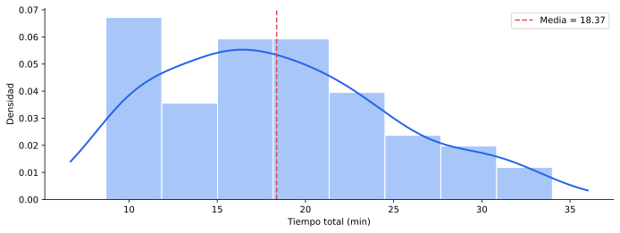
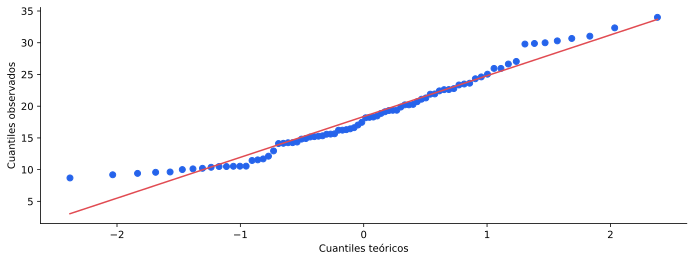
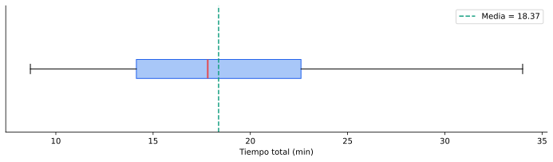
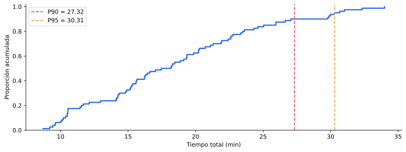
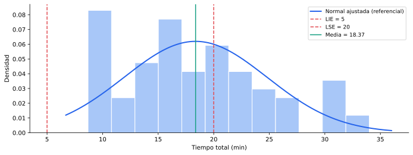
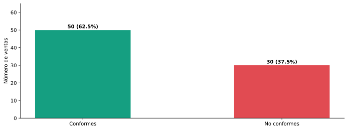

Evaluación estadística de la calidad del proceso de ventas
Análisis de estabilidad, normalidad, variabilidad, capacidad y nivel sigma a partir de una simulación del proceso de atención en una ferretería.
Docente: Ing. Sergio Omar Valladares Castillo
Curso: Mejora de Procesos y Calidad Total
Estudiante: Elvis Esleider Garcia Jaime
Descripción del caso
El proceso de ventas comprende el registro del pedido, la validación de stock, el envío de productos, las posibles correcciones y la generación de la venta en caja. Participan el cliente, el vendedor, el personal de almacén y el cajero. El estudio utiliza el tiempo total estimado de atención como variable de calidad.
El tiempo se reconstruyó como suma de espera inicial y duraciones registradas. No representa necesariamente todas las esperas internas. Los límites de especificación son supuestos académicos, no requisitos verificados del negocio.
01 · Control estadístico
Estabilidad del proceso mediante gráficos de individuales (I) y rangos móviles (MR).
Gráfico de control de individuales (I)

Gráfico de control de rangos móviles (MR)

02 · Prueba de normalidad
Evaluación de la forma de la distribución con Shapiro-Wilk, histograma y gráfico Q-Q.
Histograma de tiempos

Gráfico Q-Q

Conclusión de normalidad
Como p = 0.006902 es menor que 0.05, se rechaza la hipótesis nula de normalidad. Los índices tradicionales de capacidad deben interpretarse con precaución.
03 · Estadística avanzada
Medidas de tendencia central, dispersión, posición y forma de los tiempos de atención.
Diagrama de caja

Distribución acumulada empírica

Indicadores estadísticos
| Indicador | Resultado |
|---|---|
| Media | 18.368 min |
| Mediana | 17.810 min |
| Desviación estándar | 6.438 min |
| Coeficiente de variación | 35.05% |
| Mínimo / máximo | 8.69 / 34.00 min |
| Percentiles P90 / P95 | 27.32 / 30.31 min |
04 · Capacidad del proceso
Índices Cp, Cpk, Pp y Ppk frente a especificaciones hipotéticas de 5 a 20 minutos.
Distribución y límites de especificación

05 · Nivel sigma
Evaluación del rendimiento observado y su equivalencia sigma convencional.
Cumplimiento de especificaciones

06 · Conclusiones
Síntesis de los hallazgos del análisis estadístico de la simulación.
Conclusiones generales
- El proceso muestra señales de inestabilidad estadística: 11 puntos fuera de control en I y 3 en MR.
- La prueba Shapiro-Wilk rechaza la normalidad (p = 0.006902).
- La variabilidad relativa es considerable (CV = 35.05%).
- Los índices Cp, Cpk, Pp y Ppk son inferiores a 1 bajo las especificaciones hipotéticas.
- El 37.5% de las ventas terminadas supera el límite de 20 minutos y el sigma convencional es 1.8186.
Recursos y consideraciones metodológicas
Fuente: archivo de simulación «proceso_ventas_ferreteria_v2», hoja Datos_Simulacion. Herramientas: Python, pandas, NumPy, SciPy, Matplotlib y Google Colab. Proceso: diagrama BPMN de ventas de ferretería.
La muestra incluye solo ventas terminadas. El tiempo total se estimó sumando las actividades registradas y la espera inicial. Los límites 5–20 minutos son hipotéticos; no deben presentarse como requisitos validados por el cliente. El proceso no cumple supuestos de estabilidad y normalidad, por lo que los índices de capacidad requieren cautela.